Leaf charging dialog catalog
October 21, 2026 · 24 simulator screenshots, including ordinary charging-page context and counter-width variants. Click any display for its individual PNG.
Message list, triggers, timing, and flow notes · All screenshots on one sheet · Screenshot manifest
Normal flow: Checking flights → [Starting WiFi → Connecting (network time)] → Uploading 1 → Preparing 2 → Uploading 2 → Uploaded / Preparing USB → Uploads complete / USB ready → Charging.
Branches: Failure → retry notice → retry later. Center tap → cancel/open USB. Center hold → Turning On → startup.
The real firmware draws every screen. Offline transport and USB outcomes are controlled by a capture-only harness. Short state boundaries are captured explicitly; normal display timing may skip them. “Uploads complete” can include rejected files. See the notes for the eject-path wording and all caveats.
00 · Charging, no popup

Baseline before sync or with no active notice.
00-charging-no-popup.png
01 · Checking flights…
Find eligible flights on the SD card.
01-leaf-log-checking-flights.png
02 · Starting WiFi…
Selected flight needs a saved WiFi connection.
02-leaf-log-starting-wifi.png
03 · Connecting…
WiFi ready; waiting for a valid network clock.
03-leaf-log-connecting-network-time.png
04 · Uploading 1 of 2
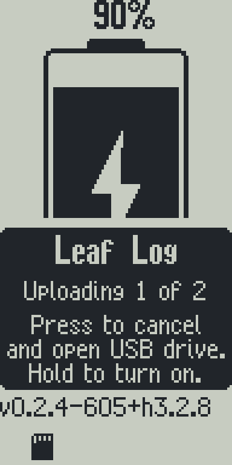
First flight upload and response handling.
04-leaf-log-uploading-1-of-2.png
05 · Preparing 2 of 2
Select/recheck the next flight after the first result.
05-leaf-log-preparing-2-of-2.png
06 · Uploading 2 of 2
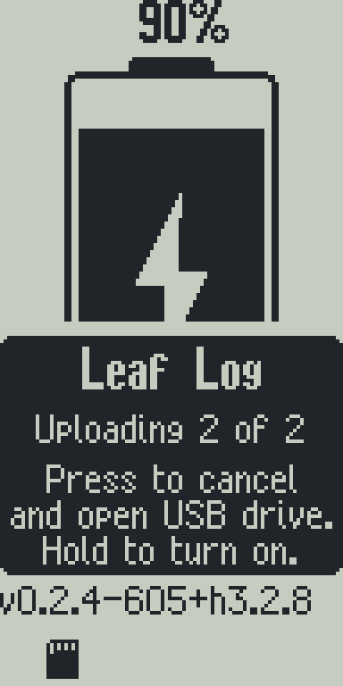
Second flight upload and response handling.
06-leaf-log-uploading-2-of-2.png
07 · Uploaded 2 of 2 / Preparing USB…
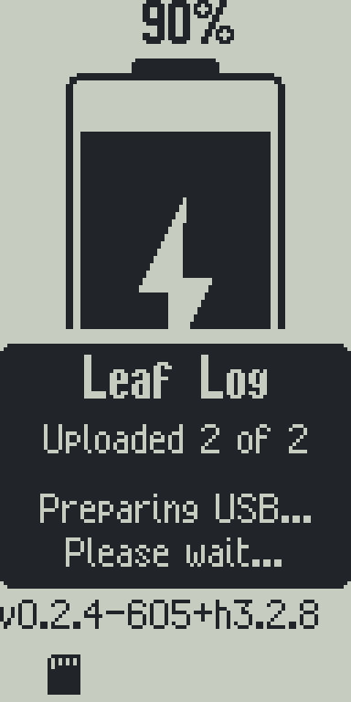
Batch processed; SD handoff is next.
07-leaf-log-uploaded-2-of-2-preparing-usb.png
08 · Uploads complete / USB drive ready
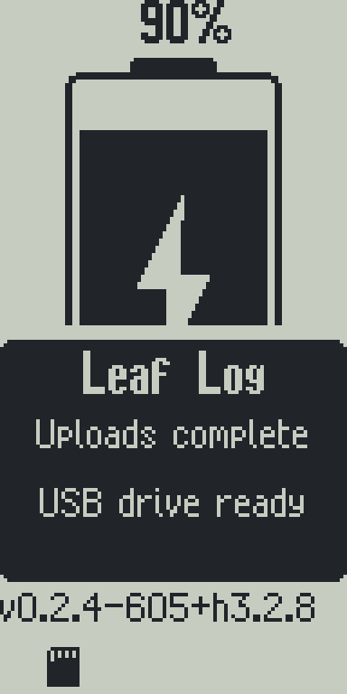
Five-second completion notice.
08-leaf-log-uploads-complete-usb-ready.png
09 · Charging after completion
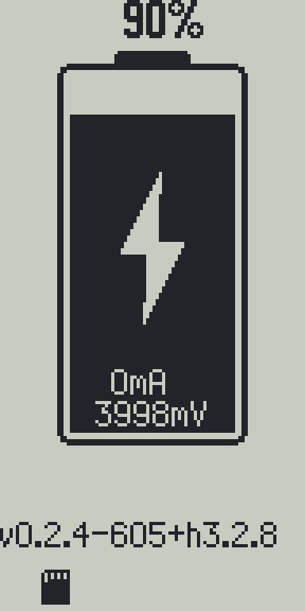
Completion notice closed; no popup.
09-charging-after-completion-popup.png
10 · Upload paused / Retry scheduled
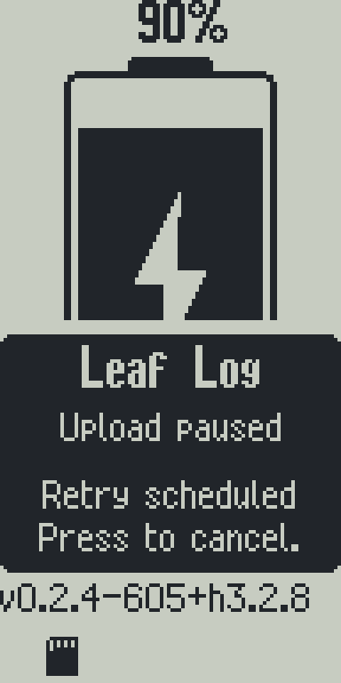
Transient failure; visible for 30 seconds.
10-leaf-log-upload-paused-retry-scheduled.png
11 · Retry pending, popup hidden

Retry still scheduled after notice disappears.
11-charging-retry-pending-popup-hidden.png
12 · Hold center to turn on
Waiting to distinguish tap from hold. Text clips.
12-leaf-log-hold-center-to-turn-on.png
13 · USB unavailable
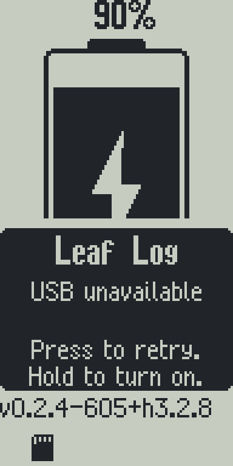
USB handoff failed; press retries USB.
13-leaf-log-usb-unavailable-press-to-retry.png
14 · Uploads complete / USB unavailable
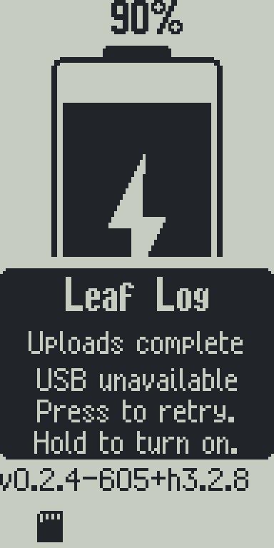
Batch processed but USB handoff failed.
14-leaf-log-uploads-complete-usb-unavailable.png
15 · Turning On / Please wait…
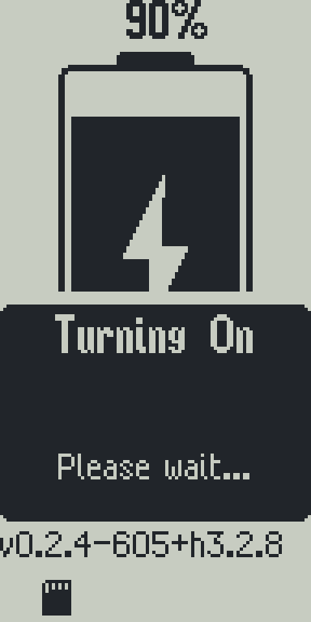
Power-on request without a confirmed mounted USB host.
15-turning-on-please-wait.png
16 · Turning On / Closing USB…
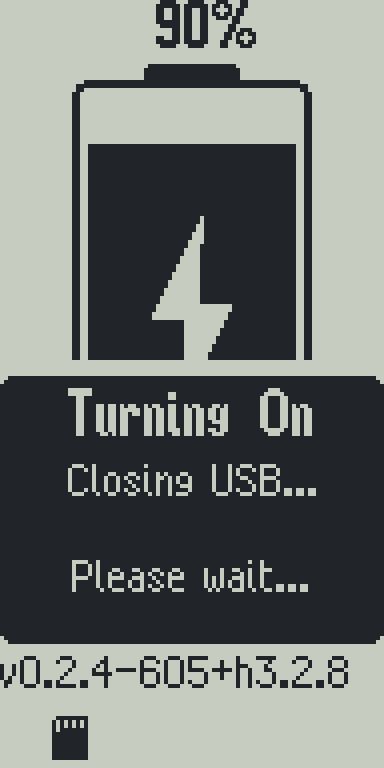
Power-on request with mounted host; SD return pending.
16-turning-on-closing-usb.png
17 · No SD card, no popup
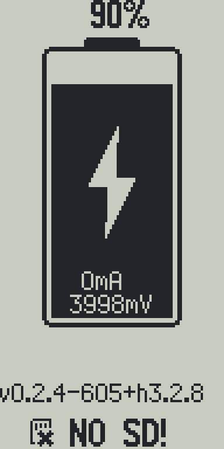
Missing-card indicator is part of the charging page.
17-charging-no-sd-card-no-popup.png
18 · Preparing 100/100
Compact counter fallback for a large queue.
18-leaf-log-preparing-compact-counter.png
19 · Uploading 100/100
Compact counter fallback for a large queue.
19-leaf-log-uploading-compact-counter.png
20 · Uploaded 1000/1000
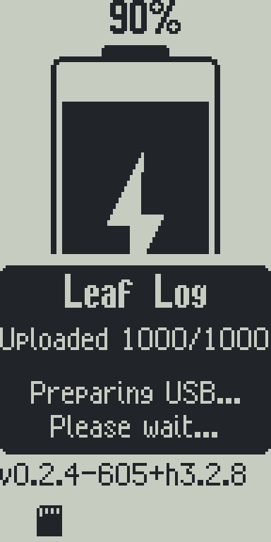
Compact counter fallback while preparing USB.
20-leaf-log-uploaded-compact-counter.png
21 · Preparing
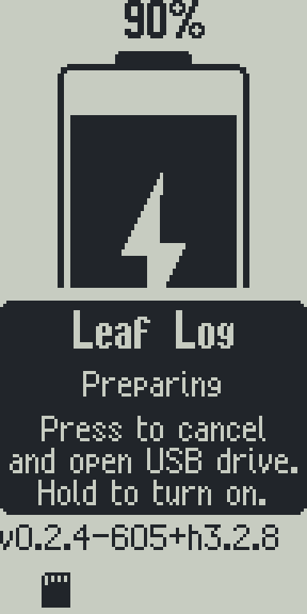
Verb-only fallback when even a compact counter is too wide.
21-leaf-log-preparing-without-counter.png
22 · Uploading
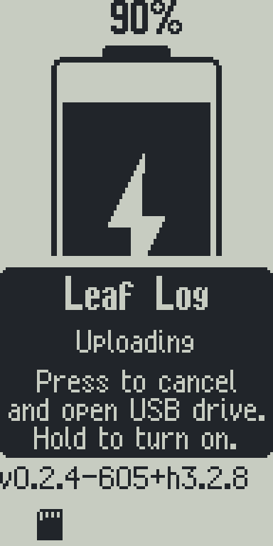
Verb-only fallback when even a compact counter is too wide.
22-leaf-log-uploading-without-counter.png
23 · Uploaded
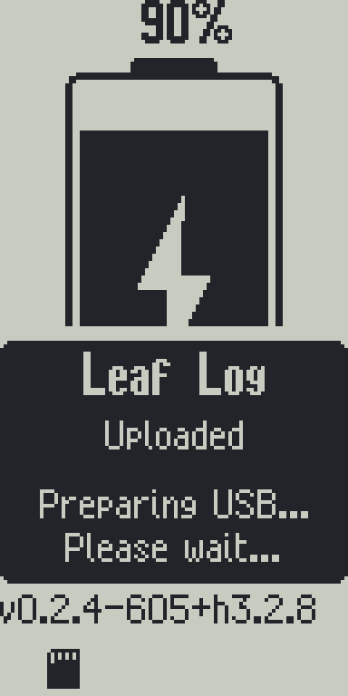
Verb-only fallback while preparing USB.
23-leaf-log-uploaded-without-counter.png